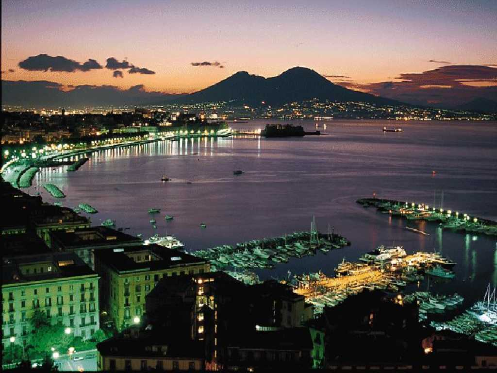
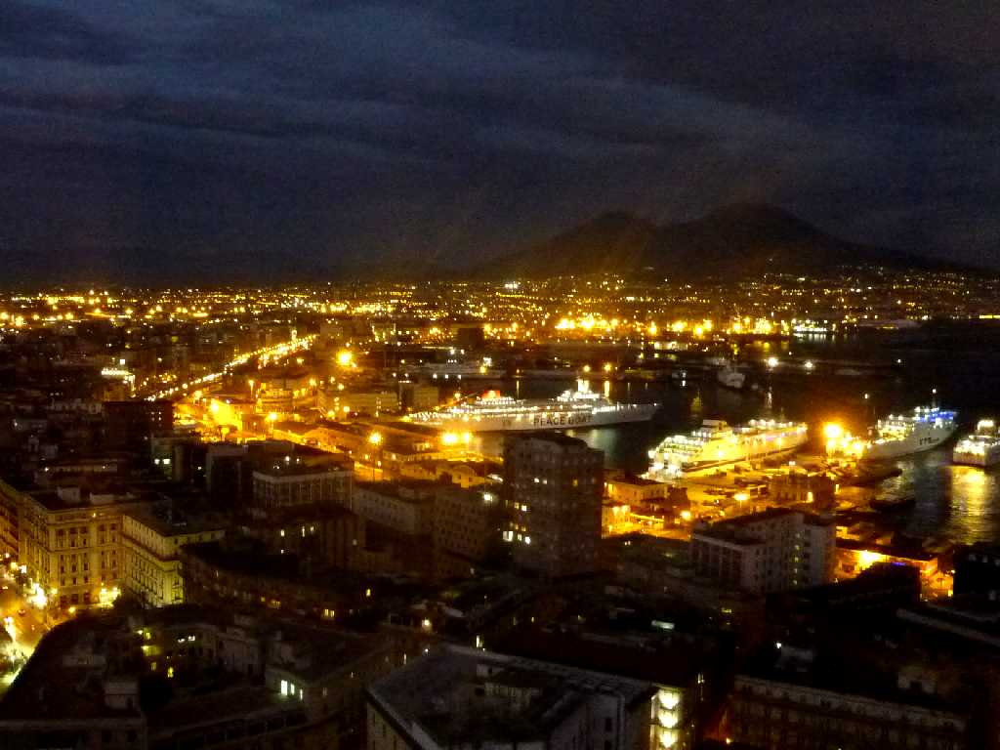
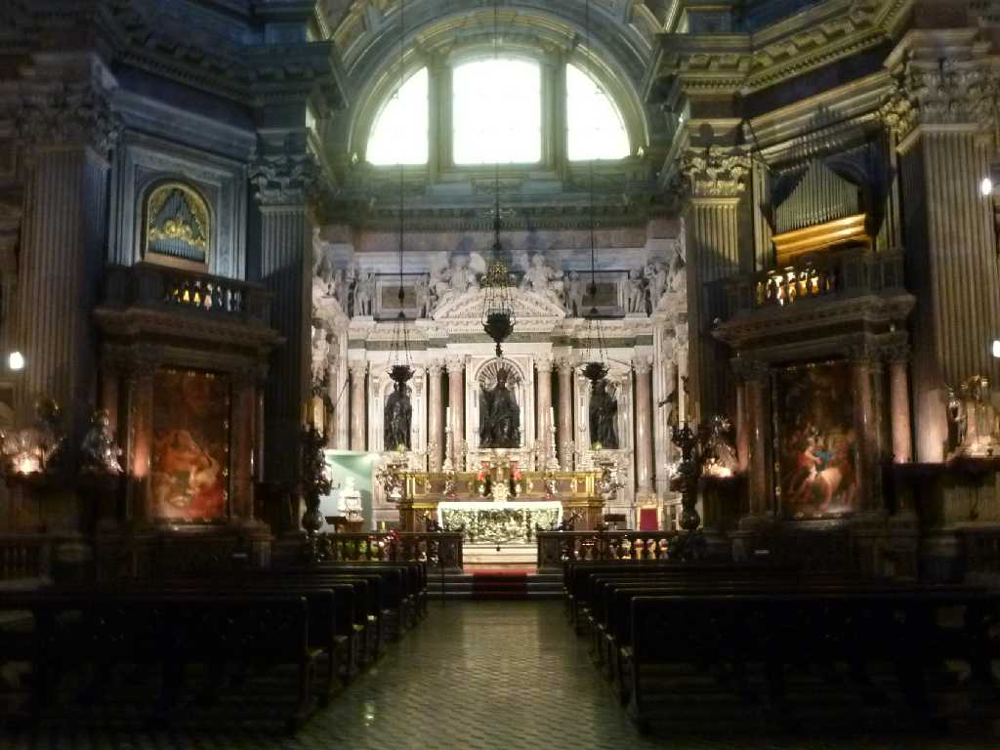
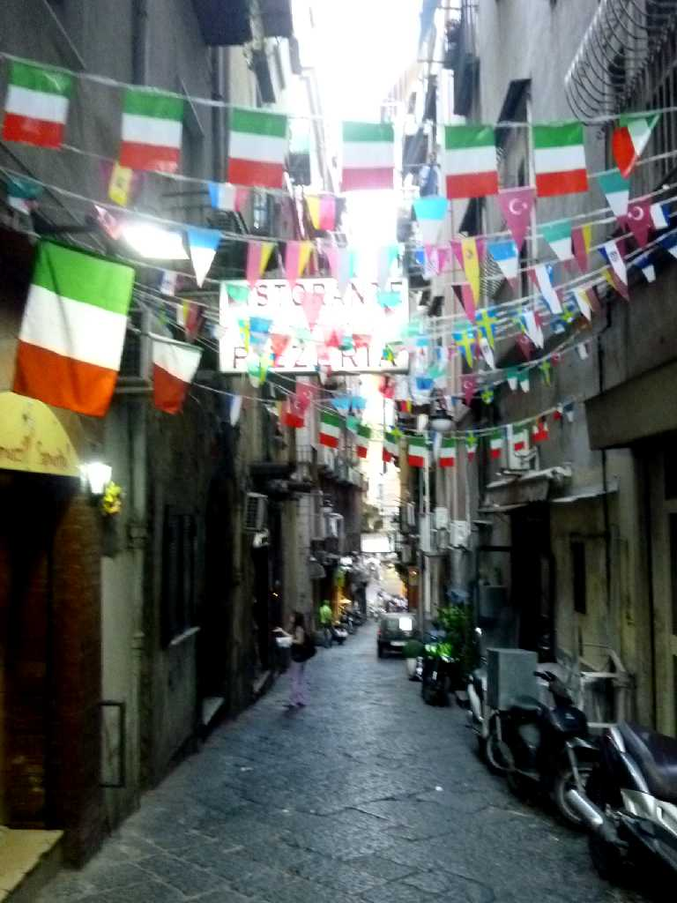
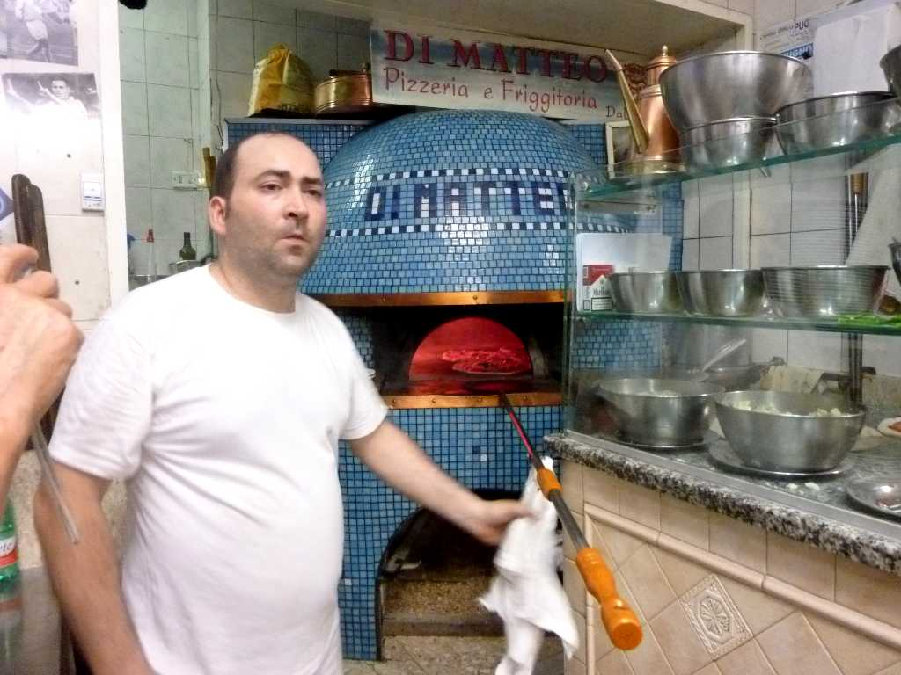
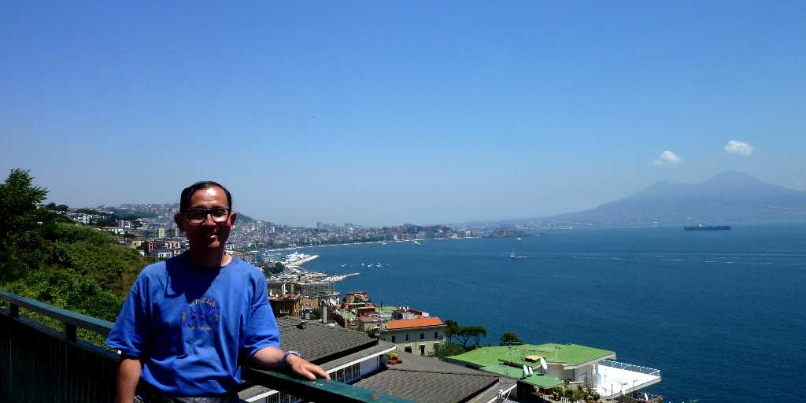

August 1973 Napoli
｢ナポリを見て死ね｣と言われる世界三大夜景の一つで夕暮れ前が絶景 Hakodate HongKong Ｂ.Ｃ.470年ギリシャ人が今のサンタルチア港に新都市Neapolisを開いたときに始まり西欧最古の都市として栄え一時はパリに次ぐ大都市となった ナポリの名はこのNeapolisから来ている

September 3 2010 SS Oceanic in Napoli Port
約４０年ぶりに訪れたベスビオ火山とナポリ港の夜景に映える SS Oceanic

Duomo di Napoli
１３世紀末から１４世紀初頭に創られたナポリの守護聖人ジェンナーロを祀るナポリ大聖堂

Old Napoli
昨年世界一周クルーズで寄港したばかりのナポリが２０１１年イタリア統一１５０周年記念で旧市街は国旗が数多く掲揚されていた

Pizzeria di Mattero
２０１０年ナポリビザ博金賞のピザ屋で夕食 米国クリントン大統領との写真が誇らしげに掲げられていた

June 22 2011 Napoli